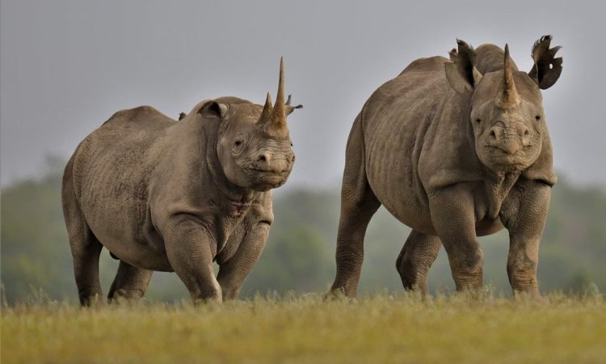
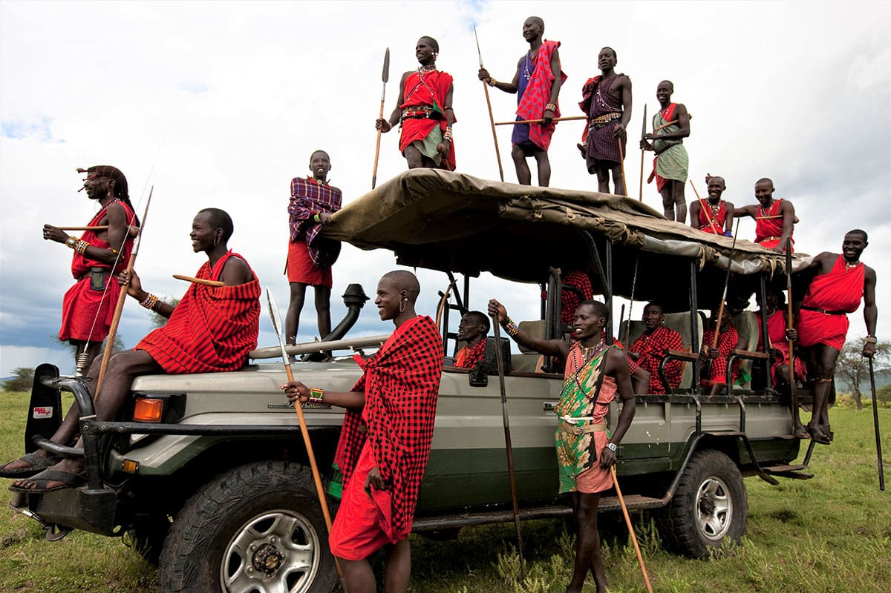
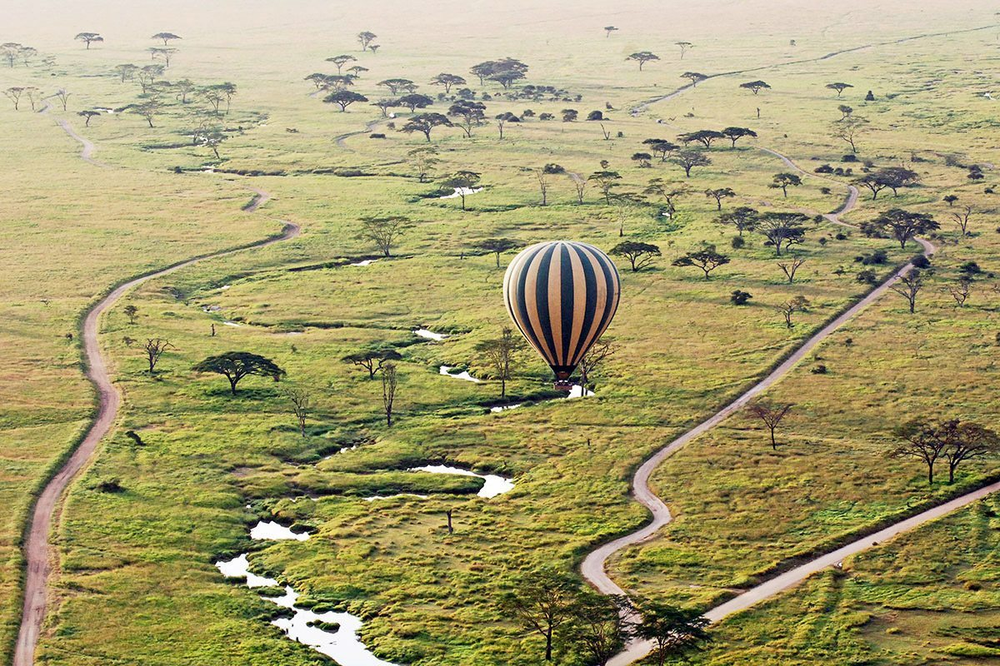
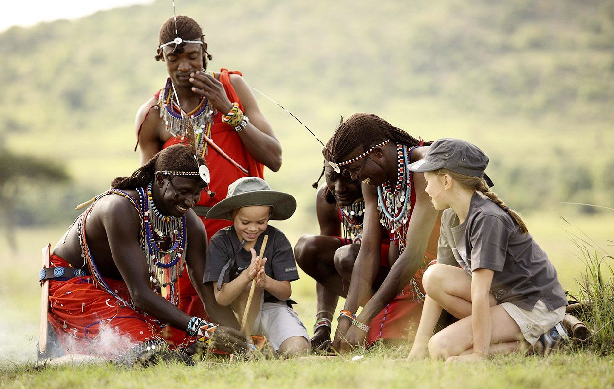

Venture off the beaten path through Kenya's most dramatic and lesser-explored national reserves. This exclusive safari showcases the arid beauty of Samburu with its unique wildlife, the misty mountains of Aberdare, and the world-famous Maasai Mara—all from your private vantage point.

Day 1-2: Arrival in Nairobi & Road Transfer to Samburu Game Reserve
Duration: 2 NightsWelcome to Kenya! Meet your expert naturalist guide at Jomo Kenyatta International Airport and begin your scenic drive northward into the rugged wilderness of Samburu Game Reserve. This arid landscape reveals acacia-dotted plains and river valleys teeming with specialized wildlife found nowhere else in Kenya. Arrive at your lodge nestled along the Ewaso Nyiro River. Begin your first evening game drive in search of reticulated giraffes, Grevy's zebras, gerenuk antelopes, and if lucky, the elusive Samburu lion. Experience the raw beauty of Africa's arid frontier.
Accommodation: Samburu Sopa Lodge / Samburu Serena Safari Lodge
Day 2: Samburu Game Reserve — Desert Nomads & Unique Species
Accommodation: Samburu Sopa Lodge / Samburu Serena Safari LodgeRise before dawn for an exceptional sunrise game drive through the desert plains. Samburu's unique ecosystem hosts the magnificent reticulated giraffe, Grevy's zebra with its striking stripes, oryx, and the endangered Somali ostrich. Enjoy a traditional bush breakfast overlooking the Ewaso Nyiro River. Afternoon game drive continues tracking predators—lions, leopards, and the distinctive African wild dogs. Visit a local Samburu manyatta village for cultural interaction with the warrior Samburu people, learning their pastoralist traditions and coexistence with wildlife.

Day 3: Samburu to Aberdare National Park — Mountain Wilderness
Duration: 1 NightAfter breakfast, depart Samburu and drive towards the misty highlands of Aberdare National Park, a dramatic transition from arid plains to lush bamboo forests and alpine moorlands. This mountainous reserve rises to 3,999 meters and hosts unique species adapted to high-altitude environments. Arrive in the afternoon and check into your lodge, then embark on an evening forest walk in search of giant forest hogs, bushbucks, and black-and-white colobus monkeys. The park's microclimate creates a mystical atmosphere as clouds roll through the valleys.
Accommodation: Nanyuki Estate / The Ark
Day 4: Aberdare to Lake Nakuru National Park — Rhino Conservation Haven
Duration: 1 NightAfter an early morning forest bird walk and breakfast, descend from the mountains towards the soda lake at Lake Nakuru, a UNESCO World Heritage Site and leading rhino sanctuary. This afternoon arrival allows immediate afternoon game drives focusing on black and white rhinoceros tracking, Rothschild's giraffes, cape buffalo, and the occasional leopard sighting. The lake's alkaline waters once supported millions of flamingos, creating a pink shoreline—seasonal depending on water levels. Enjoy the lodge facilities and prepare for tomorrow's wildlife immersion.

Day 5: Lake Nakuru Comprehensive Safari & Cultural Insights
Accommodation: Sarova Lion Hill Game Lodge / Lake Nakuru SerenaFull day safari exploration of Lake Nakuru's diverse ecosystems. Start with a sunrise game drive targeting predators and rhino sightings in optimal light. Visit Baboon Cliff viewpoint for panoramic vistas of the park, spotted with wildlife on the plains below. Explore Makalia Waterfall's lush vegetation, a contrast to the arid regions visited earlier. Mid-afternoon visit a nearby Kikuyu farming community to understand traditional agricultural practices and highland culture. Evening game drive concludes with predator-focused tracking as the sun sets over the Rift Valley escarpment.

Day 6-7: Lake Nakuru to Maasai Mara — The Great Plains Predator Experience
Duration: 2 NightsDepart Lake Nakuru with a final morning game drive before driving southward through the Great Rift Valley escarpments to the world-renowned Maasai Mara National Reserve. This legendary ecosystem encompasses over 1,500 square kilometers of pristine grasslands, woodlands, and river valleys teeming with the Big Five and countless wildlife species. Arrive mid-afternoon for your first Mara game drive. Search for lions in their pride formations, cheetahs on the hunt, and massive herds of wildebeest and zebra. Experience the raw predator-prey dynamics that define Africa's greatest wildlife theatre.
Accommodation: Mahali Mzuri / Mara Serena / Angama Mara / Sand River by Elewana
Day 7: Maasai Mara — Big Five Safari & Maasai Cultural Immersion
Accommodation: Mahali Mzuri / Mara Serena / Angama Mara / Sand River by ElewanaRise before sunrise for your most intensive Maasai Mara game drive. Target the Big Five—lion, leopard, elephant, cape buffalo, and African rhino—with expert tracking techniques. Experience a walking safari with Maasai warrior guides for intimate ground-level wildlife encounters. Witness the intricate predator-prey relationships that shape the ecosystem. Afternoon visit an authentic Maasai manyatta village for cultural immersion, learning warrior traditions, traditional customs, and their harmonious coexistence with wildlife. Conclude with a final sunset game drive and celebratory farewell dinner overlooking the endless Mara plains.
Day 7: Departure from Maasai Mara & Road Return to Nairobi
End of OperationsAfter an early farewell breakfast and final morning game drive through the Mara, begin your scenic road journey back to Nairobi. This drive offers reflective views of the landscapes traversed and opportunities for last-minute wildlife sightings. Enjoy a packed lunch en route through the Rift Valley. Arrive in Nairobi late afternoon and transfer directly to Jomo Kenyatta International Airport for your international departure, carrying memories of Kenya's most dramatic and diverse wilderness.
"Thank you for choosing our company"